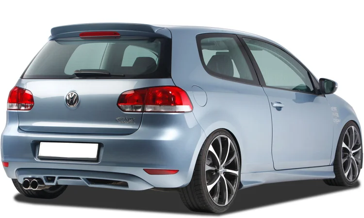
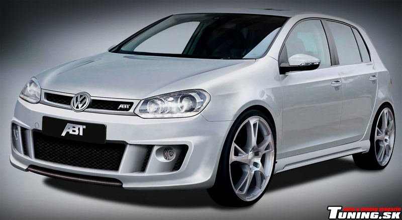
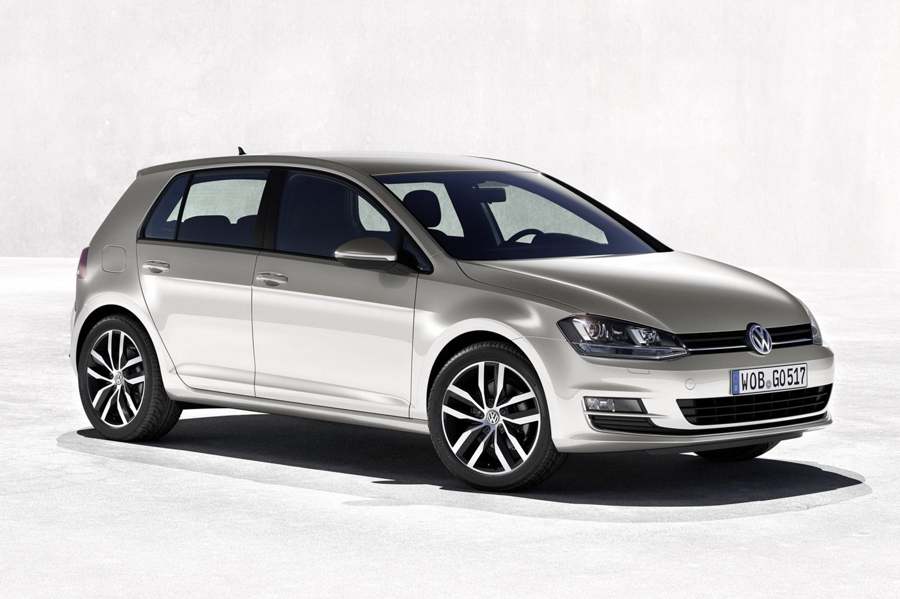
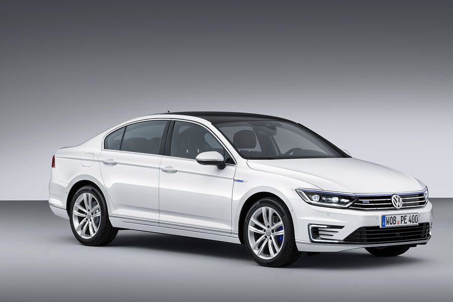
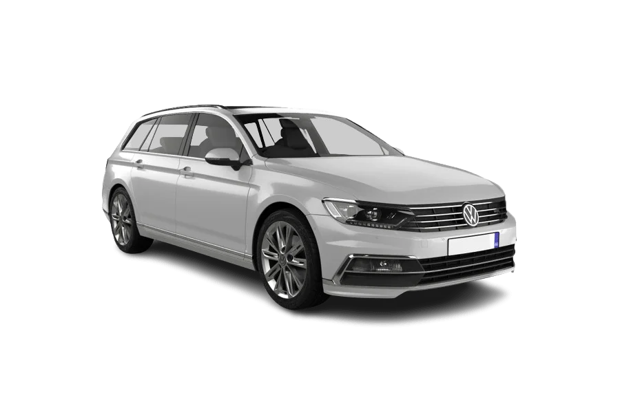

Mire se erdhet tek Makinat Ekonomike
Ketu do i gjeni disa makina ekonomike qe i ofron AutoSalloni jone.Shpresojme te ju pelqejne.
Golf 6

Golf 6 me 2 dyer është një veturë kompakte dhe ekonomike, e përshtatshme për ata që kërkojnë thjeshtësi dhe efikasitet në udhëtime.
Me motorr efikasë 1.6L, ofron konsum të ulët karburanti, duke arritur deri në 4.5-5.5 litra për 100 km.
Dimensionet e saj të vogla e bëjnë ideale për lëvizje urbane, ndërsa dizajni klasik dhe i thjeshtë i brendshëm siguron rehati bazike dhe funksionalitet. Një zgjedhje perfekte për për ata që preferojnë shpenzime të ulëta.
Viti i prodhimit: 2010
Qmimi per Golf 6: 8.000$
Me motorr efikasë 1.6L, ofron konsum të ulët karburanti, duke arritur deri në 4.5-5.5 litra për 100 km.
Dimensionet e saj të vogla e bëjnë ideale për lëvizje urbane, ndërsa dizajni klasik dhe i thjeshtë i brendshëm siguron rehati bazike dhe funksionalitet. Një zgjedhje perfekte për për ata që preferojnë shpenzime të ulëta.
Viti i prodhimit: 2010
Qmimi per Golf 6: 8.000$
Golf 6-R line

Golf 6 R-Line kombinon elementet sportive me prakticitetin ekonomik. I pajisur me motorr TDI , kjo veturë ofron performancë të mirë dhe konsum të ulët karburanti,
duke kursyer ne udhëtime të gjata. Brendësia përmban detaje sportive si sedilje me dizajn R-Line dhe timon të lëkurës, por njëkohësisht mbetet ekonomike për mirëmbajtje.
Me një pamje dinamike dhe shpenzime të ulëta operative, është një opsion i balancuar midis stilit dhe ekonomisë.Viti i prodhimit:2011
Qmimi per Golf 6 R-line: 10.000$
duke kursyer ne udhëtime të gjata. Brendësia përmban detaje sportive si sedilje me dizajn R-Line dhe timon të lëkurës, por njëkohësisht mbetet ekonomike për mirëmbajtje.
Me një pamje dinamike dhe shpenzime të ulëta operative, është një opsion i balancuar midis stilit dhe ekonomisë.Viti i prodhimit:2011
Qmimi per Golf 6 R-line: 10.000$
Golf 7

Golf 7 është një evolucion i serisë së njohur për efikasitet dhe teknologji moderne. I pajisur me motorr TDI për konsum të ulët ose versione hibride për kursime maksimale, kjo veturë arrin një konsum mesatar prej 4-5 litra për 100 km.
Brendësia përfshin sisteme si ekranin me prekje dhe ndihmës të avancuar për drejtimin, duke e bërë atë praktike dhe të sigurt për përdorim të përditshëm.
Një veturë që kombinon efikasitetin me komoditetin.Viti i prodhimit:2013
Qmimi per Golf 7: 12.000$
Brendësia përfshin sisteme si ekranin me prekje dhe ndihmës të avancuar për drejtimin, duke e bërë atë praktike dhe të sigurt për përdorim të përditshëm.
Një veturë që kombinon efikasitetin me komoditetin.Viti i prodhimit:2013
Qmimi per Golf 7: 12.000$
Passat CC

Passat CC është një sedan elegant dhe ekonomik që kombinon luksin e moderuar me efikasitetin. Me motorr TDI që sigurojnë konsum të ulët karburanti (4.5-6 litra për 100 km), kjo veturë është ideale për udhëtime të gjata.
Kabina ofron një atmosferë të qetë dhe rehati me sedilje të lëkurës dhe hapësirë të bollshme për pasagjerët.
Për ata që kërkojnë një makinë ekonomike, por me një pamje më luksoze, Passat CC është një zgjedhje e shkëlqyer.Viti i prodhimit:2015
Qmimi per Passat CC: 15.000$
Kabina ofron një atmosferë të qetë dhe rehati me sedilje të lëkurës dhe hapësirë të bollshme për pasagjerët.
Për ata që kërkojnë një makinë ekonomike, por me një pamje më luksoze, Passat CC është një zgjedhje e shkëlqyer.Viti i prodhimit:2015
Qmimi per Passat CC: 15.000$
Passat Caravan

Passat Caravan është një veturë familjare dhe ekonomike, ideale për udhëtime të gjata dhe transport të ngarkesave. Me motorr të fuqishëm dhe efikasë TDI, kjo makinë siguron konsum mesatar prej 4.5-5.5 litra për 100 km.
Hapësira e madhe e bagazhit dhe brendësia funksionale e bëjnë atë perfekte për familjet dhe udhëtarët që kanë nevojë për praktikë dhe kursim.
Teknologjia moderne për menaxhimin e karburantit shton më shumë vlerë për drejtuesit që kërkojnë ekonomi.Viti i prodhimit 2017
Qmimi per Passat Caravan: 18.000$
Hapësira e madhe e bagazhit dhe brendësia funksionale e bëjnë atë perfekte për familjet dhe udhëtarët që kanë nevojë për praktikë dhe kursim.
Teknologjia moderne për menaxhimin e karburantit shton më shumë vlerë për drejtuesit që kërkojnë ekonomi.Viti i prodhimit 2017
Qmimi per Passat Caravan: 18.000$
Polo

Volkswagen Polo është një ikonë e veturave kompakte dhe ekonomike. Me motorr të vegjël TSI , kjo veturë arrin një konsum mesatar shumë të ulët, rreth 4-4.5 litra për 100 km.
Përmasat e vogla dhe manovrimi i lehtë e bëjnë ideale për qytete, ndërsa brendësia e thjeshtë, por e rehatshme, siguron përvojë të këndshme drejtimi.
Polo është një opsion i shkëlqyer për ata që duan një makinë praktike, të besueshme dhe me kosto të ulëta operative.Viti i prodhimit 2013
Qmimi per Polo: 7.000$
Përmasat e vogla dhe manovrimi i lehtë e bëjnë ideale për qytete, ndërsa brendësia e thjeshtë, por e rehatshme, siguron përvojë të këndshme drejtimi.
Polo është një opsion i shkëlqyer për ata që duan një makinë praktike, të besueshme dhe me kosto të ulëta operative.Viti i prodhimit 2013
Qmimi per Polo: 7.000$